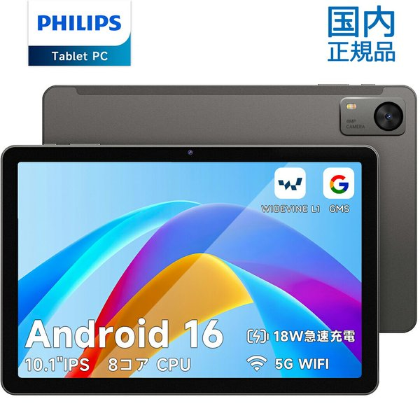
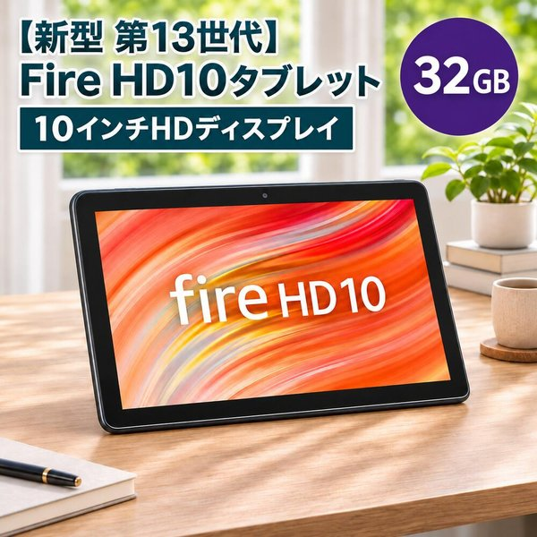
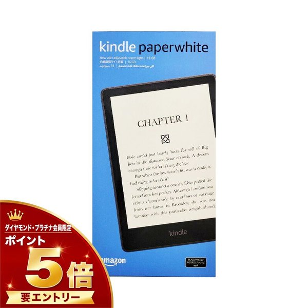
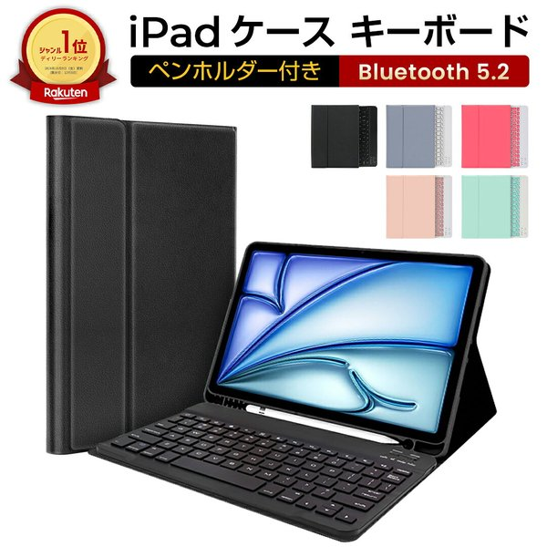
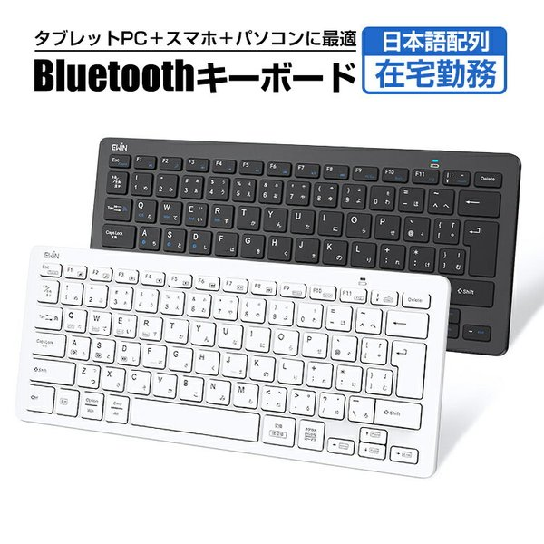
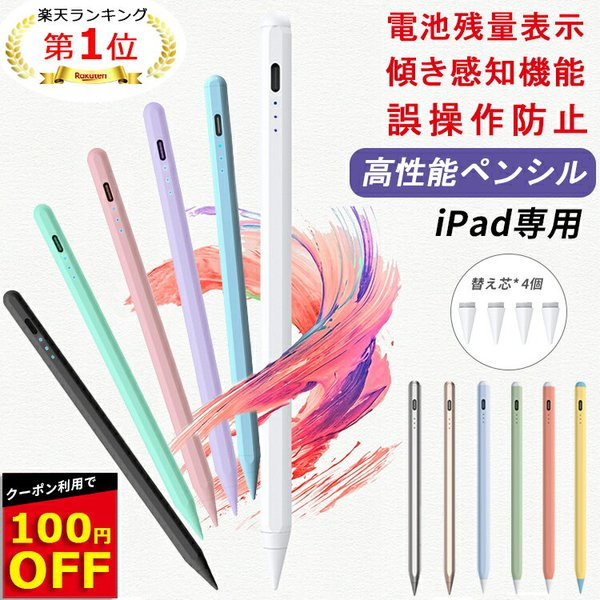
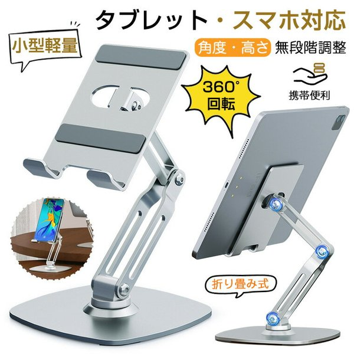
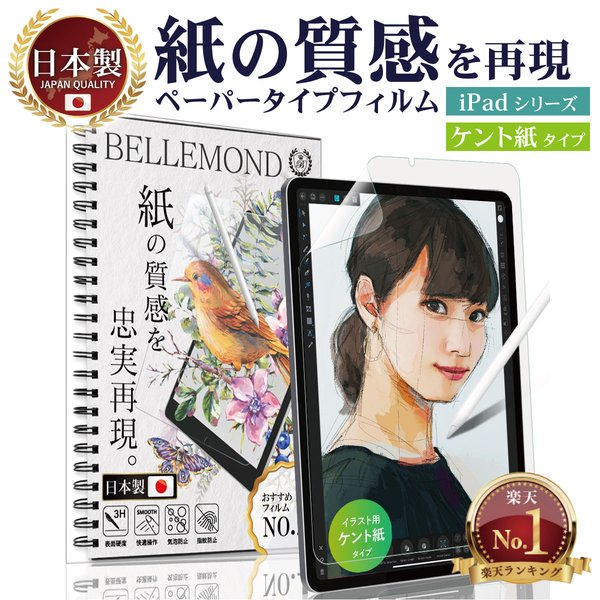
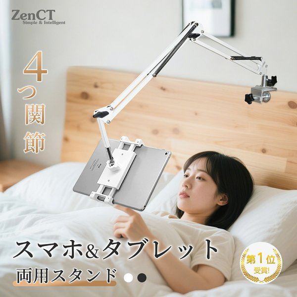

【2026年ブラックフライデー】仕事も電子書籍も快適！iPad・Androidタブレット・Bluetoothキーボード・スタイラスペン＆スタンド10選
タブレットは、買った直後より、周辺機器を揃えてからのほうが使う時間が伸びます。キーボードとペン、スタンドが揃うと、動画を見るだけの端末が、仕事と読書の道具に変わります。
選ぶ軸は、何に使うか、キーボードで入力するか、そして手書きをするかです。書類やメールの下書きが中心なら、キーボード一体型のケースがあると、ノートPCに近い使い方ができます。電子書籍が中心なら、KindleやFireタブレットのように、読むことに特化した端末のほうが目が疲れにくいです。手書きのメモやイラストを描くなら、ペンとペーパーライクフィルムの組み合わせで、紙に近い書き心地になります。スタンドは、角度を変えられるものを選ぶと、椅子に座るときとソファで寝ながら見るときの両方に対応できます。タブレット本体は容量で価格が大きく変わるので、動画を保存するのか、クラウドに置くのかを先に決めておくと、無駄な出費を抑えられます。
本記事では、楽天市場で人気・高評価のタブレットと周辺機器10選を、実売価格とレビュー評価つきで写真付き紹介します。
- おすすめ10選 スペック・特徴比較表
- BEST 1｜iPad (A16) 第11世代 11インチ Wi-Fi 128GB（2025年春モデル・未開封）
- BEST 2｜PHILIPS タブレット 10.1インチ T7315（Android 16・128GB・国内正規品）
- BEST 3｜Amazon Fire HD 10 第13世代 10インチ 32GB（Alexa対応）
- BEST 4｜Kindle Paperwhite 第12世代 16GB 7インチ（広告なし）
- BEST 5｜iPad キーボードケース 着脱式（Bluetooth・ペン収納・スタンド）
- BEST 6｜Ewin Bluetoothキーボード 日本語配列（5.1・最大3台ペアリング・静音）
- BEST 7｜タッチペン iPad ペンシル（傾き感知・残量表示・パームリジェクション）
- BEST 8｜ilemon タブレットスタンド アルミ（360度回転・高さ調整・13インチ対応）
- BEST 9｜BELLEMOND ペーパーライクフィルム（ケント紙タイプ・日本製・iPad各サイズ）
- BEST 10｜ZenCT タブレットアームスタンド（4関節・クランプ式・ベッド/デスク用）
- 【読者負担0円】買わなくても得する無料サービス
- まとめ：タブレットと周辺機器の10選の選び方
| 順位 | 商品名 | ブランド | 最大の特徴・おすすめ理由 | 総合評価 |
|---|---|---|---|---|
| BEST 1 | iPad (A16) 第11世代 11インチ Wi-Fi 128GB（2025年春モデル・未開封） | Apple | A16チップで日常用途は十分 | 4.80 |
| BEST 2 | PHILIPS タブレット 10.1インチ T7315（Android 16・128GB・国内正規品） | PHILIPS | Android 16・128GB | 4.56 |
| BEST 3 | Amazon Fire HD 10 第13世代 10インチ 32GB（Alexa対応） | Amazon | 10インチのHDディスプレイ | 4.60 |
| BEST 4 | Kindle Paperwhite 第12世代 16GB 7インチ（広告なし） | Amazon | 電子ペーパーで目が疲れにくい | 5.00 |
| BEST 5 | iPad キーボードケース 着脱式（Bluetooth・ペン収納・スタンド） | Lively Life | キーボードを着脱できる | 4.47 |
| BEST 6 | Ewin Bluetoothキーボード 日本語配列（5.1・最大3台ペアリング・静音） | Ewin | 最大3台を切り替えて使える | 4.54 |
| BEST 7 | タッチペン iPad ペンシル（傾き感知・残量表示・パームリジェクション） | QRshoji | 傾き感知で線の強弱が出せる | 4.63 |
| BEST 8 | ilemon タブレットスタンド アルミ（360度回転・高さ調整・13インチ対応） | ilemon | 360度回転で向きを変えられる | 4.80 |
| BEST 9 | BELLEMOND ペーパーライクフィルム（ケント紙タイプ・日本製・iPad各サイズ） | BELLEMOND | ケント紙に近い書き心地 | 4.56 |
| BEST 10 | ZenCT タブレットアームスタンド（4関節・クランプ式・ベッド/デスク用） | ZenCT | 4関節で位置を細かく調整できる | 4.53 |
iPad (A16) 第11世代 11インチ Wi-Fi 128GB（2025年春モデル・未開封）

A16チップを積んだ第11世代のiPadで、11インチの液晶と128GBのストレージを備えています。未開封・未使用の新品で、保証が未開始のため、購入後はAppleの保証を自分で受けられます。動画編集のような重い作業でなければ、資料の閲覧、メール、電子書籍、動画視聴までこれ1台で足ります。Smart Connectorに対応しているので、キーボードやペンも純正・社外を選ばず使えます。楽天市場での実売価格は約72,800円（2026年11月時点）。
- A16チップで日常用途は十分
- 128GBで写真・動画も余裕がある
- 未開封・保証未開始の新品
- 128GBは動画をたくさん保存すると足りなくなる
PHILIPS タブレット 10.1インチ T7315（Android 16・128GB・国内正規品）

フィリップスの10.1インチタブレットで、Android 16と128GBのストレージを搭載しています。メモリは最大12GBまで使え、8コアCPUと90HzのHD画面で、動画もスクロールもなめらかに動きます。国内正規品で1年保証が付き、Widevine L1に対応しているため、動画配信サービスも高画質で見られます。子どもやシニアの初めてのタブレットとしても選びやすい価格です。楽天市場での実売価格は約25,980円（2026年11月時点）。
- Android 16・128GB
- 90Hzのなめらかな画面
- 国内正規品で1年保証
- iPadと比べると、アプリの最適化はやや劣る
Amazon Fire HD 10 第13世代 10インチ 32GB（Alexa対応）

Amazonの10インチタブレット、Fire HD 10の第13世代です。32GBのストレージで、microSDカードを足せば容量を増やせます。Alexaに対応しているので、音声で動画や音楽を呼び出せます。Kindle本、Prime Video、Amazonミュージックがまとまって使えるため、Amazonをよく使う家ほど、1台あると便利です。楽天市場での実売価格は約26,980円（2026年11月時点）。
- 10インチのHDディスプレイ
- Alexaで音声操作できる
- microSDで容量を追加できる
- Google Playには対応していないため、使えるアプリが限られる
Kindle Paperwhite 第12世代 16GB 7インチ（広告なし）

7インチの電子ペーパー画面を搭載したKindle Paperwhiteです。紙に近い表示で、液晶のように光が目に刺さらず、長時間読んでも疲れにくいのが特徴です。16GBあれば、日本語の書籍を数千冊保存できます。広告なしモデルなので、スリープ画面に広告が表示されません。防水仕様のため、お風呂やキッチンでも読めます。楽天市場での実売価格は約27,492円（2026年11月時点）。
- 電子ペーパーで目が疲れにくい
- 16GBで数千冊保存できる
- 広告なし・防水
- レビューは6件と少なく、専用機のため動画やアプリは使えない
iPad キーボードケース 着脱式（Bluetooth・ペン収納・スタンド）

iPadに装着してノートPCのように使える、着脱式のキーボードケースです。キーボードは磁石で付け外しでき、映画を見るときは外して軽くできます。ペン収納とスタンドを兼ねているため、持ち歩くものが増えません。第9世代から第11世代、iPad Air、iPad Proの11インチまで幅広く対応しています。楽天市場での実売価格は約2,580円（2026年11月時点）。
- キーボードを着脱できる
- ペン収納とスタンドを兼ねる
- 多くのiPadモデルに対応
- キーピッチが狭いため、長文入力は慣れが必要
Ewin Bluetoothキーボード 日本語配列（5.1・最大3台ペアリング・静音）

Bluetooth 5.1で接続する、日本語配列のワイヤレスキーボードです。最大3台まで登録でき、iPad、スマホ、パソコンのあいだをボタンで切り替えられます。キーが静音設計なので、家族が寝ている時間やカフェでも打ちやすいです。単体で持ち運べる薄型なので、タブレットと一緒にバッグに入れられます。楽天市場での実売価格は約2,980円（2026年11月時点）。
- 最大3台を切り替えて使える
- 日本語配列で打ちやすい
- 静音設計で音が鳴りにくい
- ケースと一体ではないため、持ち運び時に2つに分かれる
タッチペン iPad ペンシル（傾き感知・残量表示・パームリジェクション）

iPad専用のスタイラスペンで、傾きを感知して線の太さを変えられます。電池残量が表示されるため、使う前に充電が足りているか分かります。パームリジェクションに対応しているので、手のひらが画面に触れても線が乱れません。Type-Cで充電でき、ケーブルを増やさずに済みます。メモやイラストの下書きまでなら、これ1本で足ります。楽天市場での実売価格は約1,980円（2026年11月時点）。
- 傾き感知で線の強弱が出せる
- 電池残量を表示
- パームリジェクション対応
- 純正Apple Pencilのような筆圧感知はない
ilemon タブレットスタンド アルミ（360度回転・高さ調整・13インチ対応）

アルミ製のタブレットスタンドで、台座が360度回転します。高さと角度を変えられるため、椅子に座って使うときも、立って操作するときも画面を合わせられます。13インチ・15.6インチのタブレットにも対応する大きさで、滑り止めが付いています。折りたたんで持ち運べるので、リビングとデスクのあいだで移動できます。楽天市場での実売価格は約2,200円（2026年11月時点）。
- 360度回転で向きを変えられる
- 高さ・角度を調整できる
- 13〜15.6インチ対応
- アルミ製で滑りやすいので、滑り止めの位置を確認する
BELLEMOND ペーパーライクフィルム（ケント紙タイプ・日本製・iPad各サイズ）

紙のような書き心地になる、日本製のペーパーライクフィルムです。ケント紙に近い表面で、ペン先が滑りすぎず、文字や線が止めやすくなります。貼ったままApple Pencilを使えるため、手書きのメモやイラストがはかどります。気泡が入りにくい加工で、貼り直しもできます。楽天市場での実売価格は約1,298円（2026年11月時点）。
- ケント紙に近い書き心地
- 日本製で気泡が入りにくい
- 貼ったままペンを使える
- 画面がわずかに暗くなるので、動画鑑賞はやや不利
ZenCT タブレットアームスタンド（4関節・クランプ式・ベッド/デスク用）

クランプで天板やベッドのフレームに固定する、タブレット用のアームスタンドです。4つの関節で位置を細かく変えられ、寝ながらでも画面を目線の高さに持ってこられます。iPad、Kindle、Switch、Androidタブレットに対応し、日本語の説明書が付いています。1年保証付きで、ソファやベッドでの読書が楽になります。楽天市場での実売価格は約3,180円（2026年11月時点）。
- 4関節で位置を細かく調整できる
- クランプ式で天板に固定
- 1年保証付き
- クランプの固定には天板の厚さと、取り付ける場所の形状を確認する
この記事の商品を買う前に、まずは無料で得する選択肢をチェック。どれも登録・利用は0円で、無料期間中に解約すれば料金はかかりません。読みたい雑誌がある人、ポイントを貯めたい人、アンケートなら気軽という人、それぞれに合うものを選べます。
初回31日無料・無料期間中に解約すれば0円 → 楽天ポイントモール｜登録無料で毎日ポイ活
買い物なしでもポイントが貯まる無料サービス → 楽天インサイト｜アンケートに答えてポイント
登録無料・すきま時間のアンケートで貯まる → 楽天カード｜年会費永年無料
新規発行・年会費ずっと0円 →
4つのサービスの違いと使い分けは「出費0円で得する！買わずにポイントが貯まる無料サービス厳選4選」でまとめています。
💡 まとめ：タブレットと周辺機器の10選の選び方
タブレットは、本体だけで買うと動画視聴で終わりがちです。まずキーボードを足して、メールや書類の下書きができる状態にしてください。キーボード一体型のケースは持ち運びに強く、単体のBluetoothキーボードは家のなかで複数の端末を切り替えるのに向いています。手書きをするなら、タッチペンとペーパーライクフィルムをセットで用意すると、紙のノートに近い感覚になります。スタンドは、角度と高さを変えられるものを選ぶと、デスクでもソファでも使えます。ベッドやソファで長時間見るなら、アーム式のスタンドがあると首への負担が減ります。本体の容量は、写真と動画をどれだけ保存するかで決めてください。周辺機器から先に揃えると、本体に必要な性能がはっきりするので、買い替えのときも迷いません。
楽天市場では「5と0のつく日」や「お買い物マラソン」などのキャンペーンに合わせて購入すると、ポイント還元が最大化してお得に手に入ります。ぜひチェックしてみてくださいね。